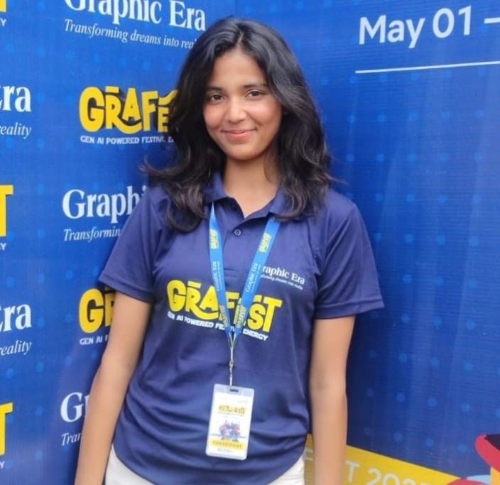

Computer Science & Engineering Student

I am a Computer Science and Engineering student with a passion for building meaningful solutions through technology. I enjoy exploring new areas of CS — from algorithms and data structures to web development and machine learning.
I believe in learning by doing, and I love turning ideas into working projects.
I learned how to introduce myself clearly and professionally. I understood the importance of being confident while speaking about myself. I learned that first impressions matter in interviews and presentations. I learned to talk about my strengths and skills without exaggerating. I practiced speaking smoothly and clearly. I gained confidence in sharing my background and interests. I learned how tone, body language, and eye contact affect communication. I understood that I should change my introduction depending on the situation. I learned to organize my thoughts so I don't hesitate or get confused. I realized that a good self-introduction helps in building a professional image.
I learned how to record and organize my personal and academic information systematically. I understood the importance of keeping an updated profile for academic and career purposes. I learned to identify my skills, strengths, and areas for improvement. I understood how a profiling sheet helps in preparing for interviews and presentations. I learned to summarize my achievements and academic projects clearly. I realized the value of reflecting on my hobbies and interests in a professional profile. I learned how to present my certifications and courses effectively. I understood how a well-prepared profile builds confidence for self-introduction. I learned the importance of accuracy and honesty while documenting personal information. I realized that profiling helps in setting future goals for learning and skill development.
I learned how to give a proper self-introduction. I learned to speak confidently in front of others. I learned the importance of eye contact and body language. I learned how to include important details about myself. I learned to communicate clearly and effectively. I learned to improve my tone and voice while speaking.
I learned how to prepare and deliver a presentation. I learned to organize content in a clear and structured way. I learned to speak confidently while presenting. I learned the importance of body language and eye contact. I learned how to use slides effectively. I learned to engage the audience and communicate ideas clearly.
I learned to listen attentively during group presentations. I learned to understand different perspectives and ideas. I learned by observing others' presentation styles. I learned the importance of patience and active listening. I learned how teamwork works in presentations. I learned to respect others while they are presenting.
I learned how to participate in a group discussion. I learned to express my ideas clearly in a group. I learned to listen to others' opinions respectfully. I learned how to communicate confidently in a group setting. I learned the importance of teamwork and coordination. I learned to respect different viewpoints. I learned how to build on others' ideas during discussion.
I learned how to write a formal email. I learned the proper format of email writing. I learned how to write a professional cover letter. I learned how to present my skills and qualifications effectively. I learned the importance of formal language and tone. I learned how to structure content clearly and properly.
I learned by discussing the email and cover letter questions given as homework. I learned the correct format through class discussion. I learned from mistakes and feedback provided in class. I learned how to improve my writing style and clarity. I learned the importance of proper structure and formal tone.
I developed a simulation of onion routing using Python, where messages are encrypted in multiple layers to ensure anonymity. Each node in the network decrypts only its respective layer, forwarding the message without knowing the full path or origin. I implemented layered encryption using cryptographic techniques, simulating how systems like Tor work. The project demonstrates concepts like privacy preservation, secure communication, and multi-hop routing.
Developed a Rubik’s Cube solver using Design and Analysis of Algorithms concepts, where the cube is modeled as a state space problem. The solution uses search algorithms to find the optimal sequence of moves to reach the solved state.
Developed a deep learning-based system to detect fake or tampered certificates by analyzing visual patterns and inconsistencies in document images. The model learns features such as fonts, seals, signatures, and layout anomalies to classify certificates as genuine or fake.
| # | Assignment | Subject | Due Date | Status |
|---|---|---|---|---|
| 01 | Linked List Implementation | Data Structures | Jan 2025 | Completed |
| 02 | Database Normalization Report | DBMS | Feb 2025 | Completed |
| 03 | TCP/IP Protocol Analysis | Computer Networks | Mar 2025 | Completed |
| 04 | ML Classification Model | Machine Learning | Apr 2025 | In Progress |
| 05 | Web App with REST API | Web Development | May 2025 | Pending |
A glimpse into my academic journey, events, and experiences.
Replace the placeholders above with your own images by editing the HTML.